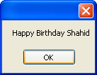

Passing values to your C# Classes
<< Part of an ongoing lesson - first part is here >>
The message that displays in the previous lesson is just "Happy Birthday". But what if you wanted the name of a person as well, "Happy Birthday, Shahid!"? What you need is a way to pass information over to your classes.
There are several ways to pass data to your classes. An easy way is to simply pass the information as an argument, between the round brackets of the method.
Change the Method in your class to this (the new additions are in bold):
public string getMessage(string givenName)
{
return "Happy Birthday " + givenName;
}
So we've just added a string variable called givenName between the round brackets of the Method. We then use this in the code.
If you try to start your programme, however, you'll get an error message. C# will underline this part of your code:
birthdayMessage.getMessage( )
Because you've added an argument to your method, you need some data between the round brackets. Change the line to this:
birthdayMessage.getMessage( "Shahid" )
Run your programme again, and you should find that the following message displays:

So you're just passing data to your Method in the normal way.
However, we set the method up to be public:
public string getMessage(string givenName)
This is not the recommended way to pass information over to your classes, though. Method are usually hidden from the outside world by making them private. This "hiding" methods and variables in your class is known as Encapsulation. The idea is that you hide as much of your class as possible. That way, it can't be broken by passing information over that the class can't handle. A broken class may crash your programme!
So change the first line of your Method to this:
private string getMessage(string givenName)
Try to run your programme and you'll get an error:
"getMessage is inaccessible due to its protection level."
The reason it's inaccessible is because you've made it private. So it can't be see from outside of its own class. If that's the case, then how can you pass values over? The answer is to set up a property instead. We'll do that in the next lesson.